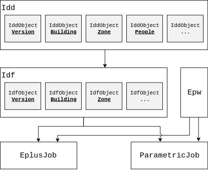

A Toolkit for Using EnergyPlus in R.
eplusr provides a rich toolkit of using whole building energy simulation program EnergyPlus directly in R, which enables programmatic navigation, modification of EnergyPlus, conducts parametric simulations and retrieves outputs. More information about EnergyPlus can be found at its website.
A comprehensive introduction to eplusr can be found using vignette("eplusr"). There is also an online slides here (Interfacing EnergyPlus Using R). You can learn more about eplusr at https://hongyuanjia.github.io/eplusr, along with full package documentation.
Installation
You can install the latest stable release of eplusr from CRAN.
Alternatively, you can install the development version from GitHub.
Since running the IDF files requires EnergyPlus (https://energyplus.net), EnergyPlus has to be installed if you want to run EnergyPlus models in R. There are helper functions in eplusr to download and install it automatically on major operating systems (Windows, macOS and Linux):
# install the latest version (currently v9.1.0)
eplusr::install_eplus("latest")
# OR download the latest version (currently v9.1.0) and run the installer
# manually by yourself
eplusr::download_eplus("latest", dir = tempdir())Note that the installation process in install_eplus() requires administrative privileges. You have to run R with administrator (or with sudo if you are on macOS or Linux) to make it work if you are not in interactive mode.
Features
- Read, parse and modify EnergyPlus Input Data File (IDF)
- Read, parse and modify EnergyPlus Weather File (EPW)
- Query on models, including classes, objects and fields
- Directly add, modify, duplicate, insert, and delete objects of IDF
- Automatically change referenced fields when modifying objects
- Save changed models into standard formats in the same way as IDFEditor distributed along with EnergyPlus
- Run your models and collect the simulation output
- Conduct parametric energy simulations and collect all results in one go
Usage overview
Class structure
Below shows the class structure in eplusr.

Basically, eplusr uses Idf class to present the whole IDF file and IdfObject class to present a single object in an IDF. Both Idf and IdfObject class contain member functions for helping modify the data in IDF so it complies with the underlying EnergyPlus IDD (Input Data Dictionary). Similarly, IDD file is wrapped into two classes, i.e. Idd and IddObject.
Besides, Epw class is used to present EnergyPlus Weather files; EplusJob to run single EnergyPlus simulation and collect outputs, ParametricJob to run parametric EnergyPlus simulations and collect all outputs.
It is highly recommended to read the documentation to get a thorough understanding on each class.
Getting started
library(eplusr)
# parse IDD
idd <- use_idd(8.8, download = "auto")
#> IDD v8.8.0 has not been parsed before.
#> Try to locate `Energy+.idd` in EnergyPlus v8.8.0 installation folder `/usr/local/EnergyPlus-8-8-0`.
#> IDD file found: `/usr/local/EnergyPlus-8-8-0/Energy+.idd`.
#> Start parsing...
#> Parsing completed.
# read IDF
idf <- read_idf(system.file("extdata/1ZoneUncontrolled.idf", package = "eplusr"))
# print idf
idf
#> ── EnergPlus Input Data File ──────────────────────────────────────────────
#> * Path: `/home/hongyuanjia/R/eplusr/extdata/1ZoneUncontrolled.idf`
#> * Version: `8.8.0`
#>
#> Group: <Simulation Parameters>
#> ├─ [01<O>] Class: <Version>
#> │─ [01<O>] Class: <SimulationControl>
#> │─ [01<O>] Class: <Building>
#> │─ [01<O>] Class: <SurfaceConvectionAlgorithm:Inside>
#> │─ [01<O>] Class: <SurfaceConvectionAlgorithm:Outside>
#> │─ [01<O>] Class: <HeatBalanceAlgorithm>
#> └─ [01<O>] Class: <Timestep>
#>
#> Group: <Location and Climate>
#> ├─ [01<O>] Class: <Site:Location>
#> │─ [02<O>] Class: <SizingPeriod:DesignDay>
#> └─ [01<O>] Class: <RunPeriod>
#>
#> Group: <Schedules>
#> ├─ [02<O>] Class: <ScheduleTypeLimits>
#> └─ [01<O>] Class: <Schedule:Constant>
#>
#> Group: <Surface Construction Elements>
#> ├─ [01<O>] Class: <Material>
#> │─ [02<O>] Class: <Material:NoMass>
#> └─ [03<O>] Class: <Construction>
#>
#> Group: <Thermal Zones and Surfaces>
#> ├─ [01<O>] Class: <GlobalGeometryRules>
#> │─ [01<O>] Class: <Zone>
....
# extract object
idf$Material_NoMass$R13LAYER
#> <IdfObject: `Material:NoMass`> [ID:12] `R13LAYER`
#> Class: <Material:NoMass>
#> ├─ 1: "R13LAYER", !- Name
#> │─ 2: "Rough", !- Roughness
#> │─ 3: 2.290965, !- Thermal Resistance {m2-K/W}
#> │─ 4: 0.9, !- Thermal Absorptance
#> │─ 5: 0.75, !- Solar Absorptance
#> └─ 6: 0.75; !- Visible Absorptance
# get object relation
idf$object_relation("R13LAYER", "all")
#> ── Refer to Others ────────────────────────────────────────────────────────
#> Target(s) does not refer to any other field.
#>
#> ── Referred by Others ─────────────────────────────────────────────────────
#> Class: <Material:NoMass>
#> └─ Object [ID:12] <R13LAYER>
#> └─ 1: "R13LAYER"; !- Name
#> ^~~~~~~~~~~~~~~~~~~~~~~~~
#> └─ Class: <Construction>
#> └─ Object [ID:15] <R13WALL>
#> └─ 2: "R13LAYER"; !- Outside Layer
# extract field value
idf$RunPeriod[[1]][c("Begin Month", "End Month")]
#> $`Begin Month`
#> [1] 1
#>
#> $`End Month`
#> [1] 12
# add new object
idf$add(RunPeriod = list("run_period", 3, 1, 4, 1))
#> $run_period
#> <IdfObject: `RunPeriod`> [ID:54] `run_period`
#> Class: <RunPeriod>
#> ├─ 01: "run_period", !- Name
#> │─ 02: 3, !- Begin Month
#> │─ 03: 1, !- Begin Day of Month
#> │─ 04: 4, !- End Month
#> │─ 05: 1, !- End Day of Month
#> │─ 06: "UseWeatherFile", !- Day of Week for Start Day
#> │─ 07: "Yes", !- Use Weather File Holidays and Special Days
#> │─ 08: "Yes", !- Use Weather File Daylight Saving Period
#> │─ 09: "No", !- Apply Weekend Holiday Rule
#> │─ 10: "Yes", !- Use Weather File Rain Indicators
#> └─ 11: "Yes"; !- Use Weather File Snow Indicators
# get possible values for fields
idf$Construction$FLOOR$value_possible("Outside Layer")
#> ── 2: Outside Layer ───────────────────────────────────────────────────────
#> * Auto value: <NA>
#> * Default: <NA>
#> * Choice: <NA>
#> * Source:
#> - "C5 - 4 IN HW CONCRETE"
#> - "R13LAYER"
#> - "R31LAYER"
# extract object data
idf$to_table(class = "BuildingSurface:Detailed", string_value = FALSE, unit = TRUE)
#> id name class index
#> 1: 21 Zn001:Wall001 BuildingSurface:Detailed 1
#> 2: 21 Zn001:Wall001 BuildingSurface:Detailed 2
#> 3: 21 Zn001:Wall001 BuildingSurface:Detailed 3
#> 4: 21 Zn001:Wall001 BuildingSurface:Detailed 4
#> 5: 21 Zn001:Wall001 BuildingSurface:Detailed 5
#> ---
#> 128: 26 Zn001:Roof001 BuildingSurface:Detailed 18
#> 129: 26 Zn001:Roof001 BuildingSurface:Detailed 19
#> 130: 26 Zn001:Roof001 BuildingSurface:Detailed 20
#> 131: 26 Zn001:Roof001 BuildingSurface:Detailed 21
#> 132: 26 Zn001:Roof001 BuildingSurface:Detailed 22
#> field value
#> 1: Name Zn001:Wall001
#> 2: Surface Type Wall
#> 3: Construction Name R13WALL
#> 4: Zone Name ZONE ONE
#> 5: Outside Boundary Condition Outdoors
#> ---
#> 128: Vertex 3 Y-coordinate 0 [m]
#> 129: Vertex 3 Z-coordinate 4.572 [m]
#> 130: Vertex 4 X-coordinate 15.24 [m]
#> 131: Vertex 4 Y-coordinate 15.24 [m]
#> 132: Vertex 4 Z-coordinate 4.572 [m]
# read EPW
path_epw <- file.path(eplus_config(8.8)$dir, "WeatherData/USA_CA_San.Francisco.Intl.AP.724940_TMY3.epw")
epw <- read_epw(path_epw)
# print weather
epw
#> ══ EnergyPlus Weather File ════════════════════════════════════════════════
#> [Location ]: San Francisco Intl Ap, CA, USA
#> {N 37°37'}, {W 122°24'}, {UTC-08:00}
#> [Elevation]: 2m above see level
#> [Data Src ]: TMY3
#> [WMO Stat ]: 724940
#> [Leap Year]: FALSE
#> [Interval ]: 60 mins
#>
#> ── Data Periods ───────────────────────────────────────────────────────────
#> Name StartDayOfWeek StartDay EndDay
#> 1: Data Sunday 1/ 1 12/31
#>
#> ───────────────────────────────────────────────────────────────────────────
# get location
(loc <- epw$location())
#> $city
#> [1] "San Francisco Intl Ap"
#>
#> $state_province
#> [1] "CA"
#>
#> $country
#> [1] "USA"
#>
#> $data_source
#> [1] "TMY3"
#>
#> $wmo_number
#> [1] "724940"
#>
#> $latitude
#> [1] 37.62
#>
#> $longitude
#> [1] -122.4
#>
#> $time_zone
#> [1] -8
#>
#> $elevation
#> [1] 2
# update Site:Location according to EPW LOCATION header
idf$Site_Location$set(
name = paste(loc$city, loc$state_province, loc$country),
loc$latitude, loc$longitude, loc$time_zone, loc$elevation
)
#> <IdfObject: `Site:Location`> [ID:9] `San Francisco Intl Ap CA USA`
#> Class: <Site:Location>
#> ├─ 1: "San Francisco Intl Ap CA USA", !- Name
#> │─ 2: 37.62, !- Latitude {deg}
#> │─ 3: -122.4, !- Longitude {deg}
#> │─ 4: -8, !- Time Zone {hr}
#> └─ 5: 2; !- Elevation {m}
# save the IDF
idf$save(file.path(tempdir(), "model.idf"), overwrite = TRUE)
# extract weather data
(weather <- head(epw$data()))
#> datetime year month day hour minute
#> 1: 2017-01-01 01:00:00 1999 1 1 1 0
#> 2: 2017-01-01 02:00:00 1999 1 1 2 0
#> 3: 2017-01-01 03:00:00 1999 1 1 3 0
#> 4: 2017-01-01 04:00:00 1999 1 1 4 0
#> 5: 2017-01-01 05:00:00 1999 1 1 5 0
#> 6: 2017-01-01 06:00:00 1999 1 1 6 0
#> datasource dry_bulb_temperature
#> 1: ?9?9?9?9E0?9?9?9?9?9?9?9?9?9?9?9?9?9?9?9*9*9?9?9?9 7.2
#> 2: ?9?9?9?9E0?9?9?9?9?9?9?9?9?9?9?9?9?9?9?9*9*9?9?9?9 7.2
#> 3: ?9?9?9?9E0?9?9?9?9?9?9?9?9?9?9?9?9?9?9?9*9*9?9?9?9 6.7
#> 4: ?9?9?9?9E0?9?9?9?9?9?9?9?9?9?9?9?9?9?9?9*9*9?9?9?9 6.1
#> 5: ?9?9?9?9E0?9?9?9?9?9?9?9?9?9?9?9?9?9?9?9*9*9?9?9?9 4.4
#> 6: ?9?9?9?9E0?9?9?9?9?9?9?9?9?9?9?9?9?9?9?9*9*9?9?9?9 4.4
#> dew_point_temperature relative_humidity atmospheric_pressure
#> 1: 5.6 90 102200
#> 2: 5.6 90 102100
#> 3: 5.0 89 102200
#> 4: 5.0 93 102200
#> 5: 3.9 97 102200
#> 6: 3.9 97 102200
#> extraterrestrial_horizontal_radiation
#> 1: 0
#> 2: 0
#> 3: 0
#> 4: 0
#> 5: 0
#> 6: 0
#> extraterrestrial_direct_normal_radiation
#> 1: 0
....
# a date time column added with correct start day of week type
epw$period()$start_day_of_week
#> [1] 7
weekdays(weather$datetime)
#> [1] "Sunday" "Sunday" "Sunday" "Sunday" "Sunday" "Sunday"
# run simulation
job <- idf$run(epw)
#> ── Info ───────────────────────────────────────────────────────────────────
#> Adding object `Output:SQLite` and setting `Option Type` to `SimpleAndTabular` in order to create SQLite output file.
#>
#> ── Info ───────────────────────────────────────────────────────────────────
#> Replace the existing IDF located at /tmp/RtmpCW2aK0/model.idf.
#>
#> ExpandObjects Started.
#> No expanded file generated.
#> ExpandObjects Finished. Time: 0.004
#> EnergyPlus Starting
#> EnergyPlus, Version 8.8.0-7c3bbe4830, YMD=2019.06.05 21:03
#> Processing Data Dictionary
#> Processing Input File
#> Initializing Simulation
#> Reporting Surfaces
#> Beginning Primary Simulation
#> Initializing New Environment Parameters
#> Warming up {1}
#> Warming up {2}
#> Warming up {3}
#> Warming up {4}
#> Warming up {5}
#> Warming up {6}
#> Warming up {7}
#> Warming up {8}
#> Warming up {9}
#> Warming up {10}
#> Warming up {11}
#> Warming up {12}
#> Warming up {13}
....
# print simulation error
job$errors()
#> ══ EnergyPlus Error File ══════════════════════════════════════════════════
#> * EnergyPlus version: 8.8.0 (7c3bbe4830)
#> * Simulation started: 2019-06-05 21:03:00
#> * Terminated: FALSE
#> * Successful: TRUE
#> * Warning[W]: 2
#>
#> ── During Simulation Initiation ───────────────────────────────────────────
#> [W 1/2] SetUpDesignDay: Entered DesignDay Barometric Pressure=81198 differs
#> by more than 10% from Standard Barometric Pressure=101301.
#> ...occurs in DesignDay=DENVER CENTENNIAL GOLDEN N ANN HTG 99%
#> CONDNS DB, Standard Pressure (based on elevation) will be used.
#> [W 2/2] SetUpDesignDay: Entered DesignDay Barometric Pressure=81198 differs
#> by more than 10% from Standard Barometric Pressure=101301.
#> ...occurs in DesignDay=DENVER CENTENNIAL GOLDEN N ANN CLG 1% CONDNS
#> DB=>MWB, Standard Pressure (based on elevation) will be used.
# get report data
results <- job$report_data("zone one", "zone mean air temperature",
case = "example", month = 1:6, hour = 1, day_type = "Monday",
all = TRUE
)
str(results)
#> Classes 'data.table' and 'data.frame': 29 obs. of 21 variables:
#> $ case : chr "example" "example" "example" "example" ...
#> $ datetime : POSIXct, format: "2019-01-07 01:00:00" "2019-01-14 01:00:00" ...
#> $ month : int 1 1 1 1 2 2 2 2 3 3 ...
#> $ day : int 7 14 21 28 4 11 18 25 4 11 ...
#> $ hour : int 1 1 1 1 1 1 1 1 1 1 ...
#> $ minute : int 0 0 0 0 0 0 0 0 0 0 ...
#> $ dst : int 0 0 0 0 0 0 0 0 0 0 ...
#> $ interval : int 60 60 60 60 60 60 60 60 60 60 ...
#> $ simulation_days : int 7 14 21 28 35 42 49 56 63 70 ...
#> $ day_type : chr "Monday" "Monday" "Monday" "Monday" ...
#> $ environment_name : chr "San Francisco Intl Ap CA USA TMY3 WMO#=724940" "San Francisco Intl Ap CA USA TMY3 WMO#=724940" "San Francisco Intl Ap CA USA TMY3 WMO#=724940" "San Francisco Intl Ap CA USA TMY3 WMO#=724940" ...
#> $ is_meter : int 0 0 0 0 0 0 0 0 0 0 ...
#> $ type : chr "Avg" "Avg" "Avg" "Avg" ...
#> $ index_group : chr "Zone" "Zone" "Zone" "Zone" ...
#> $ timestep_type : chr "HVAC System" "HVAC System" "HVAC System" "HVAC System" ...
#> $ key_value : chr "ZONE ONE" "ZONE ONE" "ZONE ONE" "ZONE ONE" ...
#> $ name : chr "Zone Mean Air Temperature" "Zone Mean Air Temperature" "Zone Mean Air Temperature" "Zone Mean Air Temperature" ...
#> $ reporting_frequency: chr "Hourly" "Hourly" "Hourly" "Hourly" ...
#> $ schedule_name : chr NA NA NA NA ...
#> $ units : chr "C" "C" "C" "C" ...
#> $ value : num 10.8 11.8 13.1 10.5 11.9 ...
#> - attr(*, ".internal.selfref")=<externalptr>
# a date time column added with correct day of week type
all(weekdays(results$datetime) == results$day_type)
#> [1] TRUE
# get tabular data
job$tabular_data(table_name = "site and source energy", row_name = "total site energy")
#> index report_name report_for
#> 1: 1 AnnualBuildingUtilityPerformanceSummary Entire Facility
#> 2: 5 AnnualBuildingUtilityPerformanceSummary Entire Facility
#> 3: 9 AnnualBuildingUtilityPerformanceSummary Entire Facility
#> table_name column_name
#> 1: Site and Source Energy Total Energy
#> 2: Site and Source Energy Energy Per Total Building Area
#> 3: Site and Source Energy Energy Per Conditioned Building Area
#> row_name units value
#> 1: Total Site Energy GJ 89.81
#> 2: Total Site Energy MJ/m2 386.67
#> 3: Total Site Energy MJ/m2Acknowledgement
I would like to thank many open source projects who have heavily inspired the development of eplusr package, especially these below:
- EnergyPlus: A whole building energy simulation program.
- OpenStudio: A cross-platform collection of software tools to support whole building energy modeling using EnergyPlus and advanced daylight analysis using Radiance.
- eppy: Scripting language for E+, EnergyPlus.
- JEplus: An EnergyPlus simulation manager for parametrics.